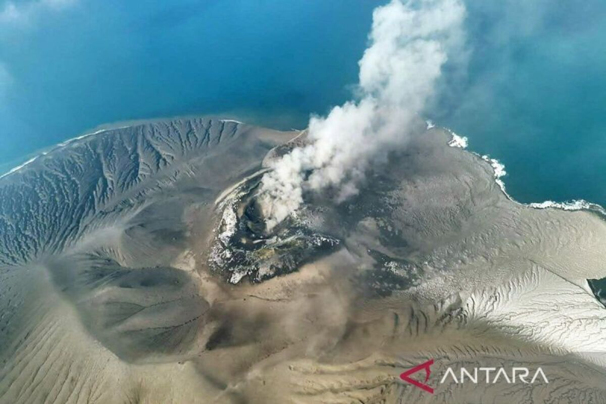

|
Website SakaDi mana ada ke Saka, di situ ada jalan.
|
|
| Beranda | Tentang Saya | Sekolahku | Syair Lagu | |
Pembelajaran Jarak Jauh
 Senin, 7 September 2026 Karena adanya abu erupsi anak guung Krakatau, maka selama 3 hari kedepan, pembelajaran dilakukan secara jarak jauh. Pembelajaran dapat memakai Zoom, LMS, WhatsApp, Telegram, atau media lain yang ditemukan oleh guru.Kementerian Pendidikan Tinggi, Sains, dan Teknologi (Kemdiktisaintek), mendorong perguruan tinggi di wilayah yang terdampak abu vulkanik erupsi Gunung Anak Krakatau, untuk menerapkan pembelajaran jarak jauh (PJJ). Kebijakan tersebut menjadi bagian dari langkah mitigasi untuk memastikan keselamatan mahasiswa, dosen, dan tenaga kependidikan tanpa menghentikan keberlangsungan proses pembelajaran. Menteri Pendidikan Tinggi, Sains, dan Teknologi (Mendiktisaintek), Brian Yuliarto, mengatakan keselamatan sivitas akademika merupakan prioritas utama, dalam penyelenggaraan pendidikan tinggi. Menurutnya, perguruan tinggi perlu memiliki fleksibilitas dalam m enjalankan pembelajaran, ketika kondisi lingkungan tidak memungkinkan kegiatan akademik dilakukan secara tatap muka. Kemdiktisaintek akan terus memantau perkembangan kondisi dan berkoordinasi dengan kementerian /lembaga terkait serta perguruan tinggi di wilayah terdampak. Penyesuaian kebijakan pembelajaran akan dilakukan dengan memperhatikan perkembangan kondisi dan rekomendasi dari otoritas kebencanaan serta kesehatan. |
Tautan eksternal |
| © Copyright Saka Satya Mandala, 2026. | |